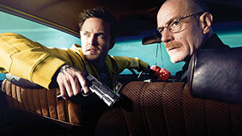

Full disclosure: I'm still catching up on Breaking Bad. I've currently seen up through season Two, Epsiode Nine "4 Days Out." I have a few more to go before I even finish the second season. Even though I'm still way behind, I can safely say it's one of the best, if not the best, shows on television right now, at least in the drama category.
Here are six reasons why.No other show on television places so much emphasis on visuals and color as Breaking Bad. As Alyssa Rosenberg notes, the show has “raised the bar for cinematography on television: the way it uses light and color make me look at everything else differently.” There are no wasted frames inBreaking Bad. Shot in 35-mm film, every scene balances its mood, its tension, on its use of colors. Somehow the show captures and accentuates the rich hues of the American southwest perfectly – and not just the reds and oranges of the landscape. Breaking Bad takes risks with even the most mundane moments: black hair against yellow sheets; the play of light and shadow at the dining room table; the lines in Walter White’s face. Director of Photography, Michael Slovis, described the show as “real film-making, more so than even many films that you work on now.” And because it’s a told in a long, narrative arc, the visual elements of the show can be unfolded slowly as well, allowing it to takes risks. Why not open up season two in black and white with just one hot pink teddy bear floating in a pool? Why not play with wide-angle lenses and other visual techniques? Why not juxtapose action sequences with long, slow shots of the desert? Lots of shows don’t take even these small risks, but Breaking Bad pulls no punches.
Everything nice that I said about the cinematography applies to the show’s writing as well. Breaking Bad has made me listen to other shows differently in the same sense that Alyssa sees every other show differently. The dialogue is always tight. Nobody acts out of character. You never get a sense that an episode is there just to fix a past continuity error. There’s never a moment that seems like the writers had run out of interesting things to say. No filler, no wasted space. And my goodness, but no show I’ve seen has so mastered the art of the cliff-hanger. Partly this is because not every episode ends at the edge of a cliff. Some just end. There’s a finality – sometimes even a sense of tragedy or malaise – to many episodes. At other times, for someone watching on Netflix streaming, it’s pretty much impossible not to stay up too late watching whatever comes next. The show has vision, and the writers manage to take a long story-arc and not let it get away from them. This has been the downfall of far too many shows, from Lost to The Sopranos. So far at least, Breaking Bad is avoiding the shortcuts in favor of the long haul. Even better, the back story remains shrouded in fog, further enforcing the sense that Walter’s past is not so terribly different than his present: defined so completely by his lies. Few other shows pull off characters this complex and convincing, and the writing is a big reason why.
Acting is the other reason. Bryan Cranston plays Walter White with extraordinary subtlety. He’s a shape-shifter, alternating from twitchy, awkward husband to thuggish drug dealer as easily as changing a shirt. Aaron Paul’s Jesse Pinkman is far more complicated than he lets on, and Paul manages to betray those hidden depths without ever allowing Pinkman’s facade to fall away. Our two meth-cooking leads are well-supported by a strong cast of major secondary characters. Anna Gunn, gives Walter’s wife, Skyler, plenty of depth and complexity, makinger at once strong and loving and deeply wounded, scarred by her concern and suspicion over Walter. Gunn’s Skyler is a tragic figure in a heartbreaking role. As Walt’s brother-in-law, Hank, Dean Norris plays a goofy, loud-mouthed A-type personality with hidden depth. His struggle with panic attacks after two violent encounters in his job as a DEA agent create a more vulnerable character, and Norris crafts a far more complex character than I’d thought possible after the first few episodes.
Breaking Bad isn’t all drama and tension all the time. It can actually be really funny. The dynamic between White and Pinkman is funny and bitter in turns. The situations they find themselves, when they’re not desperate or stomach-churning, can be funny in a dark, tense sort of way. For instance, this made me laugh out loud:
Of course, they’re not building a robot. They’re building a homemade battery to jump their Winnebago. Which brings us to…
Breaking Bad isn’t just about cooking meth. Science is used for all sorts of fun things – like building homemade batteries or creating poison out of beans, or using mercury fulminate to make a meth look-alike that’s actually a highly explosive material you can use to intimidate a psychotic drug dealer:
Chemistry has never been so fun. Aside from all the science-based action sequences, there’s even a few of Walter’s high school lectures that contain just enough science goodies to be really fascinating.
I’m not sure I’ve ever seen a show with such an excellent choice of tunes to accompany it, and that started right from the get-go with songs like “Out of Time Man” by Mike Harvey:
True to the innovation sprinkled throughout Breaking Bad, we even get a Greek Chorus part way through Season Two – or rather, a Mariachi Chorus, with the song “Heizenberg:”
Just reading through the artists represented on Season One could set you on a days-long listening spree. The only other show I can think of with such an emphasis on quality musicians is The Wonder Years. Even if it didn’t help define the mood so well it would still just be really good music. (Note: The Walking Dead also has some pretty bloody good tunes.)
Perhaps the most satisfying thing about the show, however, is how well it’s all tied together: the humor, the science, the extraordinary visuals, the writing and acting and music. Everything compliments everything else. The color and the music; the increasingly unsympathetic role of Walter White in stark contrast to the increasingly human Jesse Pinkman; the humor and the tension. For those of us who write about the war on drugs and issues of criminal justice, Breaking Bad presents a tough, complicated portrait of the issues, not content to stake out a clear stance on the matter.
What Vince Gilligan and AMC have created is the perfect anti-hero story, and they’ve managed to do it well and keep it fresh in spite of what some may see as a glut of anti-hero books and movies and television shows. But there’s something so much more addictive and alluring and real about the misadventures of Walter White that just wasn’t present with that other famous anti-hero of modern television, Tony Soprano. Unlike Tony, we don’t know what to expect. And we can’t wait to find out.
Or at least I can’t.
Source: Six Reasons Why Breaking Bad is the Best Show on Television